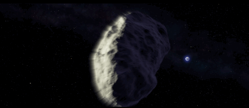

gli asteroidi sono dei corpi celesti simili per
composizione ad un pianeta terrestre, infatti sono composti per lo più di metalli,
altri di roccia, altri ancora contengono acqua ghiacciata e composti del carbonio.
Sono più piccoli, e generalmente privi di una forma sferica;
Hanno in genere un diametro inferiore al chilometro, anche se non mancano corpi di grandi dimensioni,
infatti ci sono asteroidi di dimensioni comprese tra qualche centinaio di metri e altri compresi tra 900/1000 chilometri.
DOVE SI TROVANO E COSA FANNO
 Si pensa che gli asteroidi siano residui del disco protoplanetario che non sono stati incorporati nei pianeti,
durante la formazione del Sistema. La maggior parte degli asteroidi si trova nella fascia principale, e alcuni
hanno dei satelliti. Hanno spesso orbite caratterizzate da un'elevata eccentricità. Asteroidi molto piccoli
Sono detti "pianetini" proprio per le loro dimensioni ridotte.
Gran parte degli asteroidi sono concentrati in una fascia compresa tra le orbite di Marte e di Giove.
Essi orbitano intorno al Sole nello stesso verso dei pianeti, completando una rivoluzione in tre-sei anni.
Si pensa che gli asteroidi siano residui del disco protoplanetario che non sono stati incorporati nei pianeti,
durante la formazione del Sistema. La maggior parte degli asteroidi si trova nella fascia principale, e alcuni
hanno dei satelliti. Hanno spesso orbite caratterizzate da un'elevata eccentricità. Asteroidi molto piccoli
Sono detti "pianetini" proprio per le loro dimensioni ridotte.
Gran parte degli asteroidi sono concentrati in una fascia compresa tra le orbite di Marte e di Giove.
Essi orbitano intorno al Sole nello stesso verso dei pianeti, completando una rivoluzione in tre-sei anni.
COME SI SONO FORMATI

Gli asteroidi si scontrano anche tra loro. A queste collisioni si deve il loro tipico aspetto "butterato".
Dopo alcuni urti, gli asteroidi sono destinati a frantumarsi in pezzi sempre più piccoli e a ridursi in "polvere cosmica".
In altri casi, l'asteroide perturbato può entrare in orbita attorno al pianeta, diventando un suo satellite.
Molti satelliti del Sistema Solare (per esempio quelli di Marte) hanno le caratteristiche tipiche di un asteroide:
la forma irregolare, la superficie ricoperta di crateri, la composizione.
Come si sono formati gli asteroidi? Non si sa ancora con certezza,
ma probabilmente si tratta dei resti di un pianeta mancato che avrebbe dovuto formarsi tra Marte e Giove.
In ogni caso la loro formazione è stata contemporanea a quella delle comete e dei pianeti.